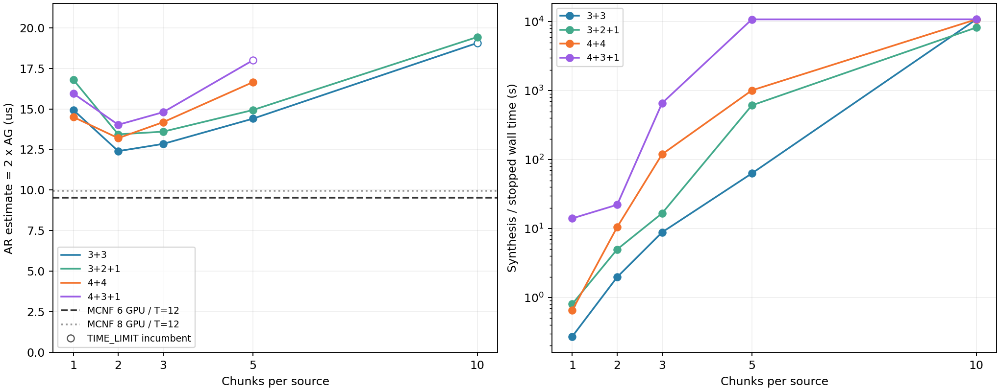

20 项 TECCL 全部结束：16 OPTIMAL，2 TIME_LIMIT 且有经回放验收的可行调度，2 TIME_LIMIT 且无 incumbent；不是不可行证明。六卡额外的 15/20 块仅留取消记录，未进入 MILP。
六卡队列结束：2026-10-18 21:06:51；八卡队列结束：2026-10-19 00:56:10（Asia/Shanghai）。
固定每卡完整向量 250000 bytes；N 卡 AllGather 每来源初始 250000/N bytes，再分 c 块，每块 250000/(Nc) bytes。每方向链路 400 Gbps（50 GB/s），每实际活跃物理 epoch 启动费 0.1 us。表中 AR 为完整 AG 时间二倍估算（us），没有运行 ReduceScatter。

| 每来源块数 | 3+3 | 3+2+1 | 4+4 | 4+3+1 |
|---|---|---|---|---|
| 1 | 14.9333 | 16.8000 | 14.5000 | 15.9500 |
| 2 | 12.4000 | 13.4333 | 13.2000 | 14.0250 |
| 3 | 12.8444 | 13.6000 | 14.1833 | 14.8000 |
| 5 | 14.4000 | 14.9333 | 16.6500 | 18.0000 * |
| 10 | 19.0667 * | 19.4333 | 3h 未得可行解 | 3h 未得可行解 |
* 表示三小时超时的可行上界，未证明最优。3+3/c10 的原生 MIP gap=6.64444445e-8（约 0.00000664%），仍保留 TIME_LIMIT；4+3+1/c5 原生 MIP gap=22.2222%。它们分别完成 52/40 个 epoch。两个八卡 c10 的 SolCount=0，通信时间保持缺失。原生 MIP gap 是带 horizon 偏移的目标 gap，不是通信时间相对误差。
| 每来源块数 | 3+3 | 3+2+1 | 4+4 | 4+3+1 |
|---|---|---|---|---|
| 1 | 0.273 | 0.807 | 0.656 | 14.055 |
| 2 | 1.981 | 4.997 | 10.520 | 22.142 |
| 3 | 8.827 | 16.651 | 119.522 | 659.279 |
| 5 | 63.116 | 612.138 | 1010.013 | 10803.676 * |
| 10 | 10805.911 * | 8227.097 | 10810.575 * | 10816.825 * |
| 拓扑 | TECCL 最好已验证块数 | TECCL AR估算(us) | MCNF 直接AR(us) | MCNF 时间减少 | MCNF 合成(s) |
|---|---|---|---|---|---|
| 3+3 | 2 | 12.4000 | 9.5333 | 23.12% | 0.699 |
| 3+2+1 | 2 | 13.4333 | 9.5333 | 29.03% | 0.814 |
| 4+4 | 2 | 13.2000 | 9.9500 | 24.62% | 0.949 |
| 4+3+1 | 2 | 14.0250 | 9.9500 | 29.06% | 1.279 |
MCNF 为 HWC / T=12 / main-only 的固定调度物理评估，启动费未重新优化；AG 使用普通 broadcast 支持的 HWC 模式（去掉 ahc_2level），直接 AR 使用完整 HWC。TECCL 是等块逐物理跳 epoch，MCNF 是连续分片、可变步长与逻辑 GPU 路由，不能将模型差异称为硬件加速比。两队列在 WH1234 并行运行，每队列内部串行，Gurobi 12.0.3、Threads=4、Seed42、TimeLimit=10800 s、进程保护11400 s/RSS16GiB。成功行合成耗时含建模/求解/导出，排除独立回放；无解行保留进程中止墙钟，纯优化耗时另存 CSV/JSON。
18 个可行 TECCL 调度均再次独立回放需求、链路容量、GPU 因果、交换机无复制及活跃步，两个超时无解行不造数；八个 MCNF z 已在本机重新载入并通过 1e-7 原空间验收。旧六卡 60 秒和 warm-start 证据保留。